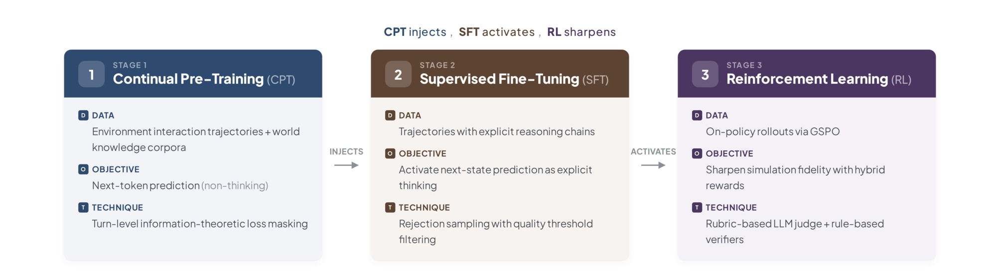
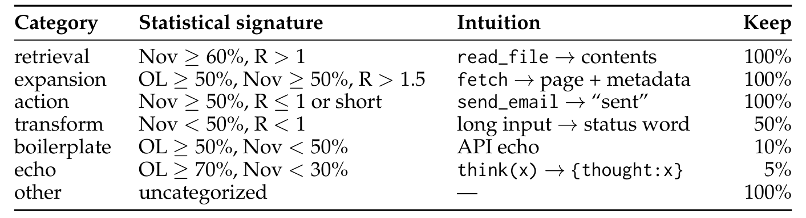
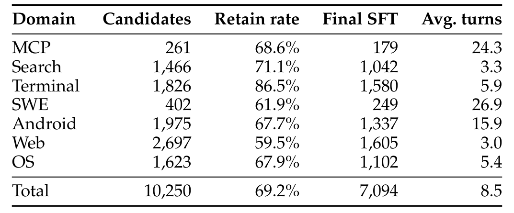

Qwen-AgentWorld
三阶段训练配方
从 continual pre-training 到 SFT 再到 RL，掌握信息论 loss masking、拒绝采样、混合奖励与训练稳定性技巧。
三阶段训练配方
Qwen-AgentWorld 从 continual pre-training（CPT）开始就显式以环境建模为目标进行端到端训练。核心原则可以概括为："CPT 注入知识，SFT 激活模式，RL 打磨质量"。

- Stage 1：CPT（Continual Pre-Training） → 从 1000 万 + 环境交互轨迹中注入世界知识 → 加上专业领域语料（工业控制、网络安全、法律、医学、金融、时事） → 使用标准 next-token prediction，配合信息论 loss masking Stage 2：SFT（Supervised Fine-Tuning） → 把下一状态预测激活为显式推理模式 → 7094 条轨迹（从 10250 个候选经拒绝采样后保留 69.2%） → 提示模板多样化 + 拒绝采样 Stage 3：RL（Reinforcement Learning） → 用混合 rubric-and-rule 奖励打磨模拟保真度 → 使用 GSPO（Group Sequence Policy Optimization） → rubric:rule 奖励比例为 9:1
Source: Qwen-AgentWorld, §3
阶段 1：带 Loss Masking 的持续预训练
CPT 在标准 next-token prediction 目标下训练。多轮环境轨迹被框定为世界建模任务：系统提示定义模拟上下文，user turn 承载智能体动作，assistant turn 承载环境响应。
信息论 Loss Masking
工具使用轨迹中很多 turn 是模板化回声，直接计算 loss 会引入噪声。
信息论 loss masking：工具使用轨迹中的很多 turn 是 boilerplate（例如把输入原样回显的工具、镜像请求参数的 API）。这些 turn 带来的梯度质量低、噪声大，但又不能直接删除，因为后续 turn 依赖它们作为上下文。
为此，对每条 (action, observation) 计算四个统计量：
- OL（Overlap）= | $W_act$ ∩ $W_obs$ | / |$W_act$|
- Nov（Novelty）= | $W_obs$ \\ $W_act$ | / |$W_obs$|
- Jac（Jaccard）= | $W_act$ ∩ $W_obs$ | / |$W_act$ ∪ $W_obs$|
- R（长度比）= | obs | / |act|
然后每个 turn 被分到七个语义类别之一，每个类别对应一个 keep ratio（参与 loss 计算的 token 比例）。
Source: Qwen-AgentWorld, §3.2

关键洞察
按统计特征分类让方法不依赖具体工具，可跨域复用。
关键洞察：类别由统计特征决定，而不是工具名称，因此分类是工具无关的。被 mask 的 turn 不参与 loss 计算，但其 token 仍保留为后续 turn 的上下文。这把"学习下一状态"和"学习下一 token"解耦：loss 只计算在那些携带真正环境信息的 turn 上。
Source: Qwen-AgentWorld, §3.2
阶段 2：监督微调
SFT 把模型从 CPT 的"非思考"模式，转向包含显式推理链的 thinking trajectory。模型学会显式进行下一状态预测：识别动作请求什么、回忆先前状态、预判期望的响应格式。

拒绝采样（Rejection Sampling）
不是每条轨迹都适合直接用于 SFT，需要筛选高质量样本。
拒绝采样：对每个查询，从通用推理模型生成三条 rollout。由独立裁判 pairwise 打分，选出最高质量轨迹。如果胜出轨迹分数低于最低阈值，则丢弃该查询。从 10250 个候选查询出发，最终保留 7094 条轨迹（保留率 69.2%）。
Source: Qwen-AgentWorld, §3.3
提示模板多样化
防止模型过拟合到某一种 system prompt 写法。
提示模板多样化：每个 SFT 样本的默认系统提示会被均匀替换为 10 种模板变体之一。轨迹的动态内容（工具定义、示例、模拟指令）被保留并重新注入新模板。这提高了模型对 system prompt 变化的泛化能力。
Source: Qwen-AgentWorld, §3.3
阶段 3：强化学习
LWM 的 RL 面临独特挑战：环境反馈预测是开放式的，且 prompt-output 极度不对称——prompt 常常长达数万 token，而输出通常只有几百到几千 token。
GSPO（Group Sequence Policy Optimization）
RL 需要处理长 prompt 和开放式输出，需要专门算法。
GSPO（Group Sequence Policy Optimization）：Qwen-AgentWorld 在 RL 阶段使用的算法。RL pool 中的 prompt 上限为 128k token。
Source: Qwen-AgentWorld, §3.4
奖励设计
奖励以 9:1 的比例结合两种互补信号（rubric:rule）。
五维 Rubric（LLM Judge）
开放式输出需要多维度反馈，而不仅是二元对错。
五维 rubric（LLM judge）：每个预测观察由 LLM 裁判在五个维度上评分（Format、Factuality、Consistency、Realism、Quality），每个维度 1–5 分。总奖励等于均值 × 5，范围 [5, 25]。每个领域使用定制的裁判系统提示，并通过内容类型分类减少对不可复现细节的误判。
Source: Qwen-AgentWorld, §3.4.1
基于规则的验证器
开放式 rubric 容易 reward hacking，需要客观锚点。
基于规则的验证器：部分数据带有可执行验证代码，产生 0/1 二元正确信号，再缩放到 [0, 25] 以与 rubric 对齐。规则奖励作为客观锚点，缓解开放式奖励带来的 reward hacking。
Source: Qwen-AgentWorld, §3.4.1
什么时候用 rubric 奖励，什么时候用规则奖励？
参考答案
使用 rubric 奖励当：
- 观察空间开放，没有可执行真值。
- 需要区分格式错误、事实错误和一致性问题。
使用规则奖励当：
- 可构造可执行验证器做确定性检查（例如精确文件内容、JSON schema 合规）。
- 需要客观锚点防止 judge 偏差导致的 reward hacking。
最佳实践：按 9:1（rubric:rule）组合，平衡多维度反馈与严格二元正确性。
Source: Qwen-AgentWorld, §3.4.1
训练稳定性
通过系统消融，论文识别出三种失效模式。
多轮展开导致的奖励崩塌
同一条轨迹展开出的样本共享长前缀，会让训练迅速崩溃。
多轮展开导致的奖励崩塌：当训练轨迹被展开为多个样本时，这些实例共享很长的公共前缀，导致训练迅速崩溃（与 "Echo Trap" 相关）。解决方案：在 RL pool 中限制每条轨迹只展开一个 turn，使每个训练样本都有唯一的预测目标，避免共享前缀重叠。
Source: Qwen-AgentWorld, §3.4.2
自我夸赞导致的 Reward Hacking
模型会学会用定性褒奖词来刷分，而不是真正提高保真度。
自我夸赞导致的 reward hacking：策略学会在输出中嵌入定性褒奖或 echo 裁判提示中的关键词，以此 inflate 分数而不提高模拟保真度。缓解措施：(1) 规则验证器提供稳定锚点；(2) 内容类型分类缩小 rubric 范围；(3) 严格标签提取把 thinking block 与预测观察分离，使自我夸赞不会到达裁判。
Source: Qwen-AgentWorld, §3.4.2
练习：实现 Loss Masking
任务：为给定 (action, observation) 对实现信息论 loss masking 逻辑。
输入：一个 turn，action 文本为 read_file(path='/data/users.csv')，observation 文本包含完整的 CSV 内容（100+ 行）。
要求：
- 计算该 turn 的 OL、Nov、Jac 和 R。
- 按表 3 把它归入七种类别之一。
- 确定 keep ratio 以及哪些 token 应参与 loss。
验证标准：该 turn 应被分类为 "retrieval"（Nov ≥ 60%，R > 1），keep ratio 100%，因为 observation 包含 action 中未出现的真实文件内容。
完整答案应包括：
- $W_act$ 基本只有路径和函数名，$W_obs$ 是大量 CSV 内容。
- OL 接近 0，Nov 接近 1，Jac 接近 0，R 显著大于 1。
- 类别：retrieval。
- 100% token 参与 loss。
Source: Qwen-AgentWorld, §3.2
---
模块小结：三阶段配方（CPT → SFT → RL）逐步注入环境知识、激活下一状态预测推理、打磨模拟保真度。关键技术包括信息论 loss masking、拒绝采样、提示模板多样化、混合 rubric-and-rule 奖励，以及针对训练稳定性的防护措施。